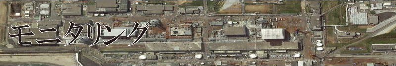

| ホーム | 私たちについて | モニタリング | 土壌分析 | 公開データ | 資料 |
|  【目的】 放射線測定については国として１kmのメッシュ、民間でも500mのメッシュでしか実施しておらず、住民の生活実態に根ざしていないことに危機感を感じ、ゼンリン住宅地図を基にした75m×100mのメッシュによる放射線測定を開始しました。 多額な税金を投与した除染作業をしてもなお放射線汚染が改善されない現状を現場視点による科学的なデータの集積で警鐘を鳴らすとともに、被災者の再度の被ばくを防ぎ、被災者のより充実した生活環境の獲得に寄与することを目指します。 【活動範囲】 「ふくいち」周辺。これまでは南相馬市、飯舘村、伊達市、富岡町、楢葉町などでモニタリングを実施。 【測定機器】 ■日立アロカメディカル社製の空間線量測定器（TCS172B)による地上１mの空間線量率(μSv/h)測定 ■日立アロカメディカル社製の表面汚染測定器(TGS146B)による地表1cmの表面汚染計数(cpm)測定 ◆事前に決めておかなければならないこと 測定場所──どの地域をどういった順路で測定するのか? 予め地図を見て学習しておく必要があります。 チーム編成─使用できる機器の数、参加人員の数でチーム編成を考えます。１チーム3〜5人で編成します。
◆現地で測定開始
◆測定後の作業
南相馬市原町区馬場の旧フラワーパーク及び馬事公苑周辺のモニタリング中の風景をスマートフォンで撮影したもの。強風下で撮影したので風の音が煩いが、普段通りに行われたモニタリングの様子です。撮影しながらの解説もついています。13本ありますが、ほぼ同じ内容です。忙しい方は１〜３まで見ていただけるといいかなと思います。 動画１／動画２／動画３／動画４／動画５／動画６／動画７／動画８／動画９／動画１０／動画１１／動画１２／動画１３ ◆参考動画2 YouTubeにアップされている原子力災害現地対策本部による放射線計測 |